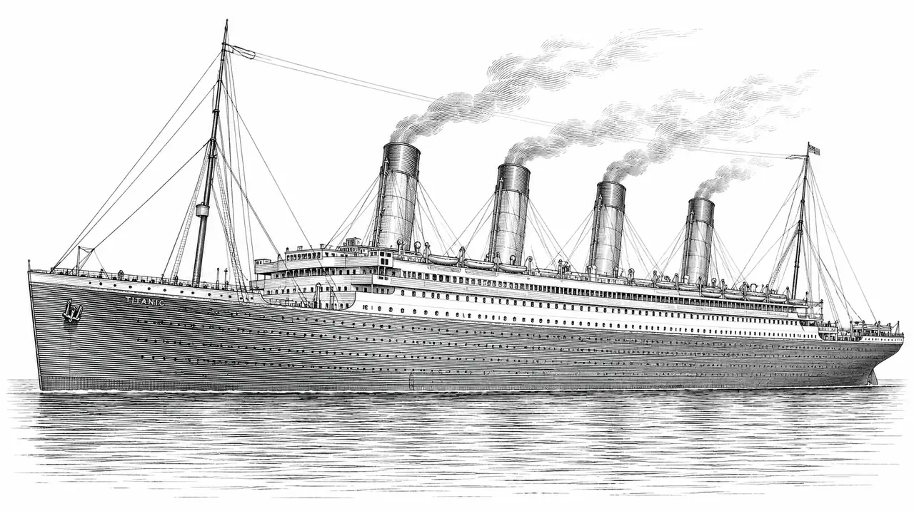
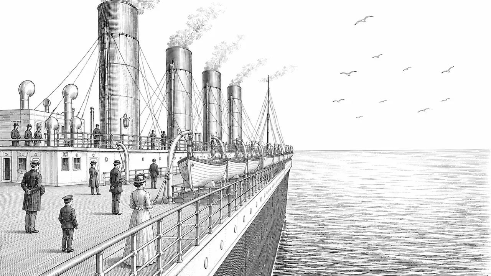
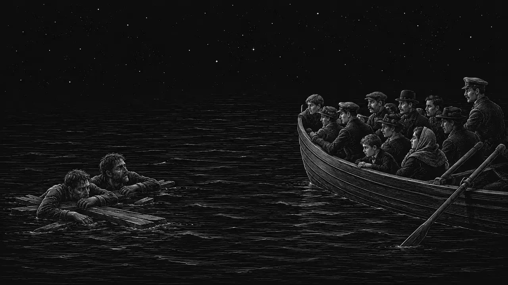

April 10 – 15, 1912 · North Atlantic
She was the largest ship ever built — branded unsinkable, bound for New York. On her maiden voyage she met an iceberg, and changed history in 160 minutes.

The Vessel
RMS Titanic was the second of three Olympic-class ocean liners built by Harland and Wolff in Belfast for the White Star Line. At the time of her launch in 1911, she was the largest moving object ever built by human hands — a floating palace with a swimming pool, Turkish bath, and a first-class dining room that seated 554 guests.
Her hull was divided into 16 watertight compartments. Naval architects assured she could stay afloat with any four flooded. The iceberg opened five. Her fate was mathematically sealed within the first hour.
The Night
April 14, 1912. The North Atlantic was unusually calm — ironically the worst condition for spotting icebergs, as waves breaking at their base would normally reveal them. Six iceberg warnings had been received by radio that day. Captain Smith kept full speed.

Exploratory Data Analysis
The Kaggle Titanic dataset contains records for 891 of the ~2,224 aboard — a curated subset
of the ship's manifest, augmented with ticket prices, cabin numbers, and family information.
Each row is a person. The target column, Survived,
tells us whether they made it. Everything on this page is derived exclusively from the
training set — the 891 labelled rows Kaggle gives you to learn from.
The test set stays sealed: looking at it before prediction would be data leakage, and the
whole point of the competition is to generalise to passengers the model has never seen.
Before building any model, EDA reveals the patterns hiding in the data — and often identifies the most predictive features before a single line of modelling code is written.
Data quality
What the data reveals
Three factors dominate survival in this dataset: sex, ticket class, and age. The "women and children first" maritime tradition was real — and the class divide was stark. The starkest finding: a first-class woman had a 96.8% chance of survival. A third-class man had a 13.5% chance. Same ship, same iceberg — a sevenfold difference explained almost entirely by two categorical variables.
On the embarkation chart: Cherbourg passengers survived at a higher rate (55%) not because of any luck related to the port — but because more wealthy first-class passengers boarded there. Port of embarkation is a proxy for class, not a cause. This is the kind of confounding that EDA teaches you to spot before modelling.